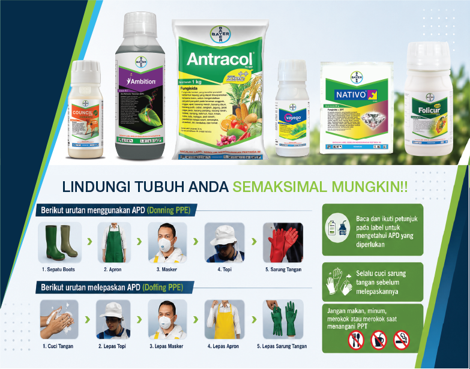
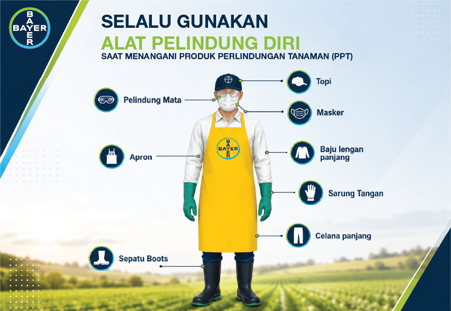
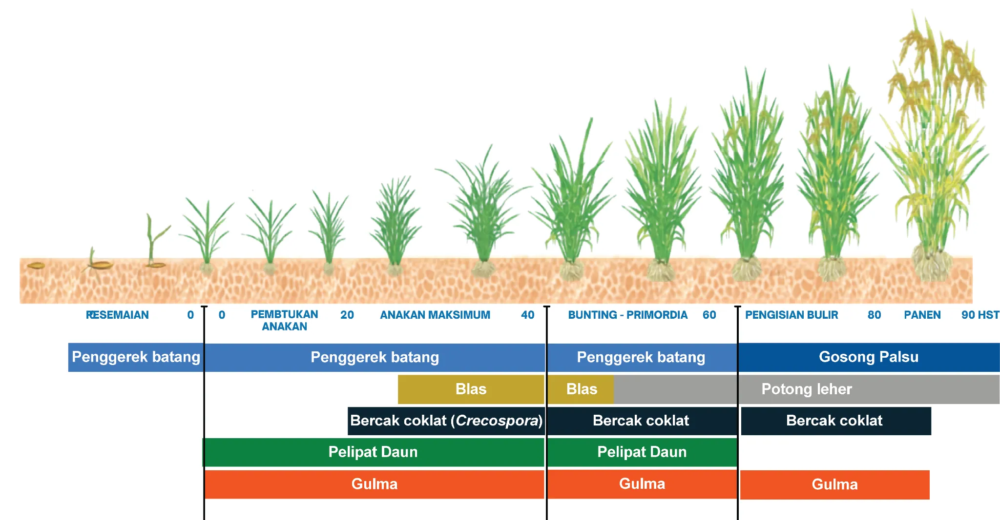

Vayego
Tetraniliprole 200 g/LDalam handbook ditujukan untuk penggerek batang dan pelipat daun.
RICE PRODUCT GUIDE 2026
Panduan digital budidaya padi dengan Produk Lengkap Paket Bayer.
Jelajahi Product Guide ↗01 / STEWARDSHIP
Utamakan keselamatan saat menangani produk perlindungan tanaman. Ikuti petunjuk label dan gunakan alat pelindung diri yang sesuai.


Gunakan sebagai pengingat sebelum aplikasi.
02 / CROP PHENOLOGY
Gunakan diagram fase pertumbuhan padi sebagai gambaran visual untuk menyusun pengamatan di lapangan.

FOKUS LAPANGAN
03 / PRODUCT VALUE
Ringkasan produk dalam panduan digital. Selalu periksa label resmi untuk sasaran, dosis, interval, dan ketentuan penggunaan.
Dalam handbook ditujukan untuk penggerek batang dan pelipat daun.
Perlindungan penyakit padi sesuai sasaran yang tercantum dalam handbook.
Diposisikan untuk mendukung pertumbuhan tanaman dalam program budidaya.
Materi revisi menyoroti aksi preventif dan mekanisme multi-site.
Materi revisi menyebut aplikasi pada umur 80 HST.
*Angka dosis mengikuti materi yang tersedia dan wajib diverifikasi terhadap label terdaftar, sasaran, serta kondisi penggunaan. Jangan gunakan panduan ini sebagai pengganti label produk.
04 / PAKET BAYER
Materi paket menekankan pendekatan berdasarkan fase pertumbuhan dan sasaran di lapangan.
FIELD PACKAGE
Kombinasi pada materi revisi: Ambition + Antracol + Vayego. Sesuaikan keputusan aplikasi dengan hasil pengamatan, label, dan kebutuhan aktual tanaman.
05 / SPRAY PROGRAM
Timeline interaktif berdasarkan materi handbook dan catatan revisi. Slot tambahan perlu divalidasi sebelum dijadikan rekomendasi aplikasi.
SELECTED SCHEDULE
Ketuk salah satu usia tanaman untuk melihat catatan aplikasi.
*Slot tambahan dan informasi dosis wajib diverifikasi dengan label terdaftar serta rekomendasi teknis setempat.
FIELD TOOLS
Alat bantu hitung kebutuhan produk berdasarkan luas. Pastikan dosis masukan berasal dari label resmi.
Hitung kebutuhan produk berdasarkan luas.
Simulasi ekonomi; bukan jaminan hasil panen.
Simulasi ROI berasal dari materi tambahan; hasil aktual dipengaruhi populasi tanaman, jarak tanam, kondisi lapangan, faktor koreksi, dan harga gabah.